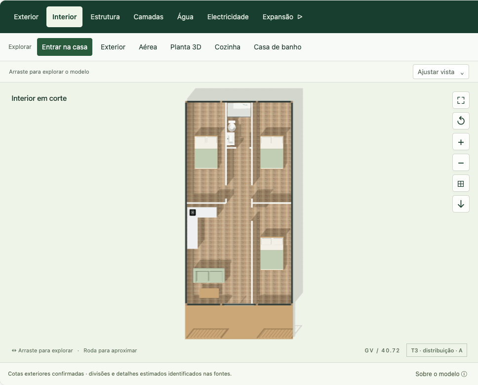
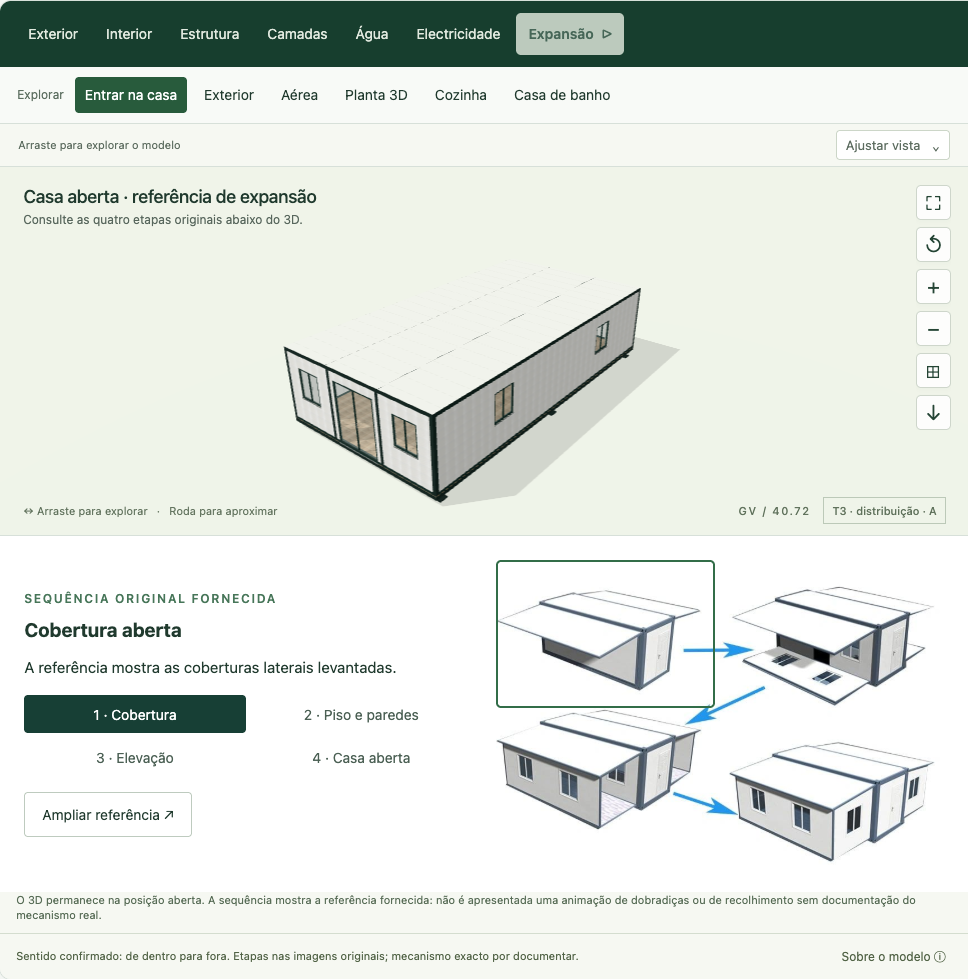

Expandível 72 · Verificação de 10 de Setembro de 2026 · R8
O que foi corrigido.
O que está documentado.
Revisão das portas, janelas, expansão, escolhas e exportações. Este relatório separa os testes da aplicação das informações que ainda dependem do fabricante.
Expansão: referência original, sem cinemática inventada.A animação anterior fazia os quatro painéis de topo rodarem de fora para dentro. A inversão simples da rotação criava interferências. A apresentação mostra agora as quatro etapas da imagem fornecida e o 3D na posição aberta. O recolhimento dos painéis, as dobradiças e a ordem exacta de abertura aguardam confirmação. Os vídeos recebidos mostram casas já abertas.
Correcções verificadas
Portas e janelas
Preservado o sentido das portas interiores observado nas sete plantas. Removidas as duas janelas traseiras indevidas das variantes T3 B e T4 B. Os aros e vidros mantêm a ligação às respectivas paredes.
A cozinha proposta no T4 A foi recuada 50 mm para permitir a circulação representada. Esta implantação é estimada; a porta mantém-se na planta original.
Escolhas com referência
Retiradas as cores livres sem catálogo. Pavimentos, fachadas e revestimentos são seleccionados pelos seus IDs originais. A cor interior permanece uma aparência de referência por confirmar.
Corrigida a página do SPC para a página 14. O alpendre fotográfico e o terraço de 3 m do catálogo estão identificados como variantes por esclarecer, com valores sob consulta.
Explorar o espaço
Onze camadas com visibilidade, isolamento e opacidade; corte e vista explodida; identificação de componentes; planta e quatro fachadas ortográficas; visita interior com colisões, rato, teclado e controlos tácteis.
As redes de água e electricidade permanecem pendentes. Foram removidos os percursos, pontos e furos anteriormente assumidos.
Preparar uma proposta
Desfazer/refazer, comparação A/B, guardar e recuperar, partilha por ligação validada, resumo PDF com logótipo e contacto confirmado. A ligação preserva as permissões de acesso ao Site.
Imagem actual em 3840 × 2160, modelo GLB com texturas integradas e onze imagens de galeria ligadas às respectivas configurações.
Âmbito dos testes
37 grupos de regressão permanentes passaram. Os ensaios independentes abaixo acrescentam interacções reais, exportações e verificações geométricas.
| Área | Execução e resultado | Limite |
|---|
| Portas | 4 848 poses anteriores preservadas; 57 920 poses de passagem nas 64 combinações T4 A sem novas intersecções testadas. | Envelopes amostrados de componentes. Não são tolerâncias de fabrico. |
| Mobiliário | 84 640 poses de componentes T4 A contra paredes, outros móveis e portas; sem novas intersecções externas. | Não repete os contactos internos de um mesmo armário cuja geometria não mudou. |
| Circulação | 56 configurações, 112 estados de porta e 5 800 movimentos. A passagem T4 A foi confirmada em malha fina de 10 mm. | Cápsula de navegação de 140 mm; não certifica acessibilidade de pessoas nem dimensões reais de passagem. A malha grossa de 60 mm não resolve a passagem estreita. |
| Referência de expansão | 7 plantas × 101 pedidos: matrizes estáticas invariantes, incluindo janelas; sem redes técnicas nem furos de serviço inventados. | Verifica apenas a posição aberta. A animação contínua permanece pendente. |
| Camadas | 11 categorias em 7 plantas; 100 aplicações de opacidade por modelo; isolamento e reposição; libertação dos materiais temporários. | Espessuras e composição não cotadas continuam estimadas. |
| Exportações | PNG actual nativo 3840 × 2160 e reposição do visor; dois GLB de 6,25 MB com 230 meshes e 3 imagens integradas, sem crescimento de geometrias/texturas; PDF de quatro páginas. Um GLB foi reimportado pelo leitor oficial r180: 230 meshes, 61 280 triângulos, 3 texturas descodificadas, metadados intactos e limites geométricos iguais à origem. | GLB estático: não inclui controlos, cortes, animações, iluminação do estúdio ou shader das juntas. |
| Galeria | 11 configurações aplicadas e 22 originais PNG/JPEG disponíveis; todos nativos 3840 × 2160. Geometria, materiais, cortes e estado de portas conferidos. | As amostras do catálogo são fotografias; não constituem mapas PBR nem cor física calibrada. |
| Interface | 375, 768 e 1440 px sem transbordo horizontal; zoom ortográfico, visita, A/B, inspector, retirada de opcionais e foco revistos. Zero erros no pacote final de navegação; zero violações automáticas nos estados de camadas e expansão testados. | Chrome 153, macOS/Apple M4; larguras simuladas, sem certificação de todos os telemóveis. Motor parado: 0 frames adicionais em 1 segundo em repouso. |
Falhas controladas: capacidade gráfica insuficiente devolveu os controlos; uma textura indisponível impediu a exportação incompleta e permitiu repetir o carregamento; a perda de contexto gráfico foi recuperada conservando a configuração. Os dois erros HTTP 503 introduzidos pelo ensaio são esperados. Não houve excepções não tratadas.
O PDF foi inspeccionado visualmente nas quatro páginas. Não é um PDF etiquetado; a sua acessibilidade não está certificada.
Fontes e confirmações pendentes
As plantas fornecem 11,80 × 6,22 m exteriores, com bandas de 2,01 / 2,20 / 2,01 m. O rectângulo exterior é 73,396 m²; 72 m² é a designação comercial. A área útil certificada não foi fornecida.
- Desenho do recolhimento dos painéis e das dobradiças; ordem e folgas reais de expansão.
- Alçados e cortes cotados, pé-direito, espessuras completas, perfis, ligações e apoios.
- Projectos de água, esgotos, electricidade e fundação para o local de instalação.
- Correspondência do alpendre fotográfico com o terraço de 3 m; aplicabilidade dos opcionais e equipamento de série.
- Paleta de pintura aprovada, escala física dos padrões e amostras calibradas.
Catálogo estruturado · Medidas e respectivas fontes · Catálogo original
Provas visuais

Planta ortográfica — sessão de teste local.
Expansão — imagem fornecida e posição aberta, sem interpolação de dobradiças.Interface a 375 px · Fachada posterior · Exemplo de resumo PDF testado · Configuração do exemplo
Registos verificáveis
Resultados técnicos com hashes dos ficheiros auditados e limites de cada ensaio. Os relatórios anteriores são históricos; as conclusões antigas sobre expansão deixam de descrever a apresentação R8.